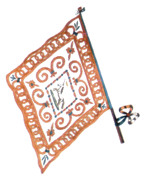

CAPITANI VITTORIOSI:
2 Giuseppe Bernardoni
1 Giovanni Ballotta
1 Francesco Susini
1 Sebastiano Stiatti
1 Fabio Ferri
1 Enea Volpi
1 Natale Lombardi
1 Giuseppe Adriani
1 Flavio Muzzi
1 Ottavio Bellaccini


- IN GRASSETTO QUANDO VINSE
- * CAPITANO ANCHE NEL NOVECENTO